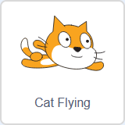
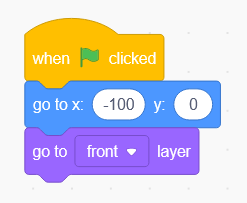
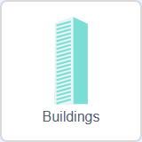
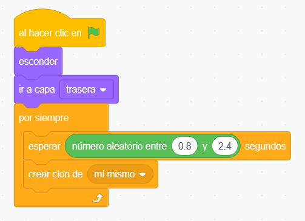
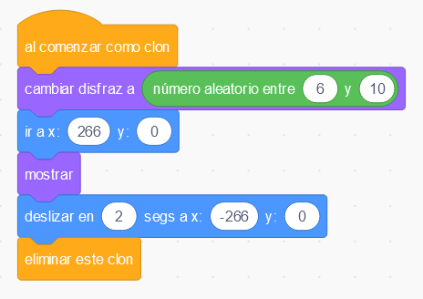
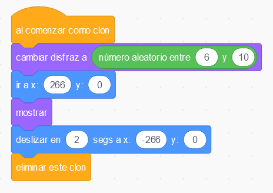

2. Flying cat¶
En esta práctica vamos a programar un gato que volará sobre un escenario de edificios que se mueven en el fondo.

We start the Scratch editor.
Click language button
 upper menu bar and select English.
upper menu bar and select English.Pulsamos el botón de tutoriales
 y
luego el botón de animación
y
luego el botón de animación  .
.Seleccionamos el tutorial "Hazlo volar" y lo visualizamos para aprender el funcionamiento básico del programa.
Una vez terminado el tutorial vamos a crear un programa en el que aparezca un gato volador entre edificios.
Delete the cat sprite by pressing on the icon of the trash can.

Añadimos un nuevo personaje, un gato volador.
Press the button choose an object
 .
.Search in the topic Animales.
and select the object Cat Flying.
Ahora vamos a programar la posición inicial del gato. Movemos al gato a la posición deseada y desde la sección movimiento
 añadimos la
instrucción ir a
añadimos la
instrucción ir a  .
.Por último en la sección apariencia
 añadimos la instrucción ir a capa delantera.
Con esta instrucción nos aseguramos de que el gato
volador se pueda ver delante de los edificios y que
estos no le tapen.
añadimos la instrucción ir a capa delantera.
Con esta instrucción nos aseguramos de que el gato
volador se pueda ver delante de los edificios y que
estos no le tapen.Añadimos movimiento al gato para que se desplace arriba y abajo con las teclas de flecha. El programa debe preguntarse si hemos apretado la tecla arriba para mover el gato hacia arriba, igualmente hacia abajo.

Press the green flag
 to test the operation of the program.
to test the operation of the program.El gato se moverá arriba y abajo con las teclas de flecha arriba y flecha abajo.
Ahora Añadimos un nuevo personaje, un edificio.
Press the button choose an object
.Search in the topic Todos.
and select the object Buildings.
Ahora realizaremos el programa del edificio.
Se crearán varios clones para que aparezcan varios edificios a la vez moviéndose hacia la izquierda.
Cada clon de los edificios elige un disfraz diferente, se mueve a la derecha, aparece y se desplaza hacia la izquierda para luego desaparecer.

Press the green flag
to test the operation of the program.Por último vamos a añadir una nueva capa de edificios que se moverá más rápido y estará colocada entre el gato y los edificios lentos.
Primero pulsamos con el botón derecho sobre el objeto edificios para duplicar el objeto y poder aprovechar el programa ya realizado.

Seleccionamos el nuevo objeto Buildings2 y modificamos su programa para que se muevan más rápido y para que se visualicen entre el gato y los otros edificios.
 

Press the green flag
to test the operation of the program.
{kind=link}
{kind=link}
{kind=link}
Ejercicios¶
Añade un fondo de noche con estrellas con el botón "Elige un fondo"
 .
.Añade al programa un objeto extra que se comporte como los edificios moviéndose de derecha a izquierda.
Primero elegiremos un objeto pájaro y a continuación en la pestaña disfraces

Pinchamos debajo a la izquierda en el botón "elige un disfraz"
Añadimos más pájaros, dragones y otros disfraces al objeto actual.
Por último repetimos el mismo programa que tenían los edificios para mover los nuevos disfraces por la pantalla.
Modifica el programa para que el gato vuele en la dirección contraria.
Dentro del objeto gato, pulsamos en la opción de dirección y fijamos el giro de izquierda a derecha pulsando en las dos flechas enfrentadas. De esta manera el gato no quedará boca arriba al girar en sentido contrario.